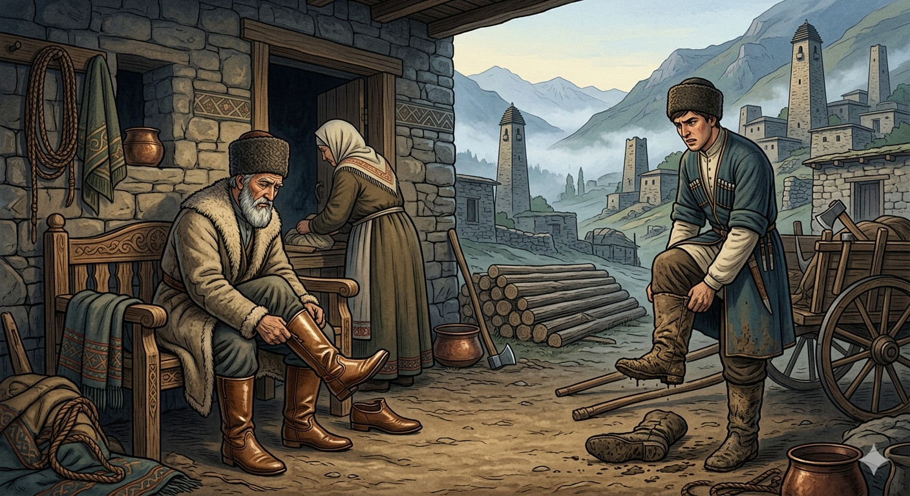

И.А. Дахкильгов. Хьехаме дувцарш - поучительные рассказы-притчи.
И.А. Дахкильгов. Хьехаме дувцарш - поучительные рассказы-притчи. Из ингушского фольклора.

Нана яле а, сесаг ца хилча дош дац
ХӀара денна хьунагӀа десга ухаш хиннаб даи воӀи. Ӏуйранна, ераш балха баха безача хана, даь хулчеш хиннай цӀенъяь, даьтта хьекха. ХӀаьта виӀий яраш бӀеха а ийттӀа а хиннай. Иштта хулаш хиннад хӀарача денна. Кхы сатоха ца луш аьннад йоах воӀо: - Даьсара, дади, нана яле а, сесаг ца хилча, дош дац хьона!
РУССКИЙ
Хотя и есть мать, но без жены не обойтись
Отец и сын ежедневно ходили в лес на заготовку строительного леса.Утром, когда им надо было идти на работу, сыромятные чувяки отца бывали вымыты и смазаны жиром, а чувяки сына были грязные и потрескавшиеся. И так бывало ежедневно. Наконец, не вытерпел сын и сказал: "Клянусь, отец, хотя и есть у меня мать, но без жены не обойтись!"
ENGLISH
Although I have a mother, I can't do without a wife
Every day, father and son would go into the forest to gather timber for building. In the morning, when it was time for them to set off for work, the father's raw leather boots would be washed and greased, whilst the son's were dirty and cracked. And so it went on, day after day. Finally, the son could bear it no longer and said: 'I swear, Father, although I do have a mother, I cannot do without a wife!'
НОХЧИЙН
Нана йолуш велахь а, зуда боцуш дан ца хуьлу
Да, воӀаца, деннахь хьуна гӀуллакх тӀулган дечиг лаха дӀаволавора. Ӏуьйранна, болх бан долуш, дан долу маьчеш эрзана йолара, даьттах хьаькхна, ткъа воӀан маьчеш бехачу, яттелла яра. Иштта хилла деннахь. ТӀаьхьара, кӀант ца лаьцна, аьлла: «Дуй ду, да, нана йолуш велахь а, зуда боцуш дан ца хуьлу!»
ПОГОВОРКИ
ВоӀо саг йоалайича, цунна: наьна юхь хьакхий муцӀара тара хет, уст-наьна бат шафран Ӏажа тара хет. Женился сын – и лицо матери показалось ему свиным рылом, а лицо тещи – яблоком шафрановым. Once the son married, his mother's face suddenly looked like a pig's snout to him, while his mother-in-law's face looked like a golden apple. ВоӀа зуда йалийча, цунна: ненан йухь хьакхин муцӀарах тера хета, стун-ненан бат шафран 1ожах тера хета.Дукха хьийна маьчи кога аттагӀа хул. Долго мятый чувяк на ноге хорошо сидит. A slipper worn in for a long time sits most comfortably on the foot. Дукха хьийна мача коган аттах хуьлу.Езачунна эрий ара а воахалу. С любимой и в дикой степи проживешь. With the one you love, you could live even in the empty wilderness. Йезачуьнца эрзан аренахь а вахало.Когаша наьна шамарах гаьна воаккх. Ноги далеко уводят человека от материнской груди. One's feet carry them far from their mother's breast. Когаша ненан шамарах гена воккху.Къоначоа нускал деза, къаьначоа маьнги беза. Молодому нужна невеста, а старику – кровать. The young man needs a bride; the old man needs a bed. КӀантан нускал деза, къаночун маьнга беза.Нанна воӀ вез, воӀа нускал дез. Мать любит сына, а сын любит невесту. The mother loves her son; the son loves his bride. Нанна воӀ веза, воӀан нускал деза.Наьна дог виӀий кер чу улл, виӀий дог ворхӀ лоам тӀехьашка улл. Сердце матери лежит в груди ее сына, а сердце сына лежит за семью горами. A mother's heart lies close in her son's chest; a son's heart lies seven mountains away. Ненан дог воӀан кийран чохь Ӏуьллу, воӀан дог ворхӀ лам тӀехьашка Ӏуьллу.Пезг, маьчи цхьана дика той а иккаш дикагӀа я. Хороши вместе чувяки и ноговицы, но сапоги лучше. Slippers and leggings suit each other well, but boots suit even better. Пезагаш, мачеш цхьана дика тахь а, эткаш диках йу.Харцъяьнна нана воӀо мара кхетаяьяц. Непутевую мать лишь ее сын вразумит. Only a son can bring a wayward mother to her senses. Харцйаьлла нана воӀа бен кхетийна йац.Ший воацачох воӀ хиннавац. Неродной – сыном не станет. One who is not truly your own will never truly become your son. Шен воцучух воӀ хилла вац.Ший наьна сий лорадечо Даьхен сий а лорадергда. Кто чтит свою мать, тот чтит Родину. One who honours their own mother will honour their homeland too. Шен ненна сий лардечо Даймехкан сий лардийр ду.Ӏуйранна гӀайгӀа еций еха маьчи, сайрийна гӀайгӀа еций цӀагӀара во сесаг (дезал). Разве не горе – утром увидеть рваные чувяки; разве не горе – вечером увидеть свою плохую жену (семью). Isn't it a grief to wake and see your shoes torn? Isn't it a grief to come home in the evening to a bad wife (family)? Ӏуьйранна гӀайгӀа йеций йоьхна мачеш, суьйранна гӀайгӀа йеций цӀера вон зуда (доьзал).Ӏуйранна хулчи леха тӀехье ма хийла вай. Да не будет у нас потомков, утром ищущих свои чувяки. May we never have descendants who go looking for their shoes only in the morning (too late). Ӏуьйранна хулчеш лоьхуш тӀаьхье ма хилийла вай.